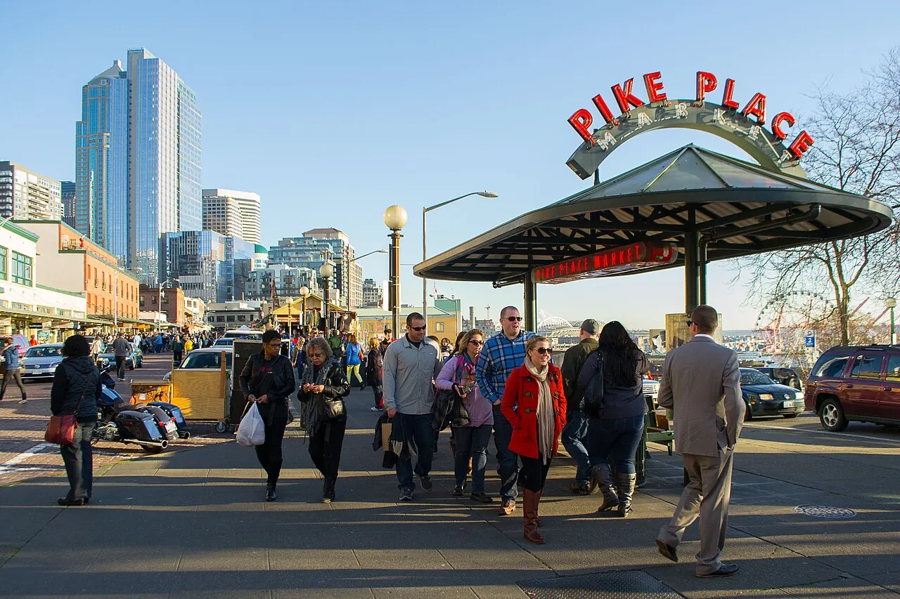
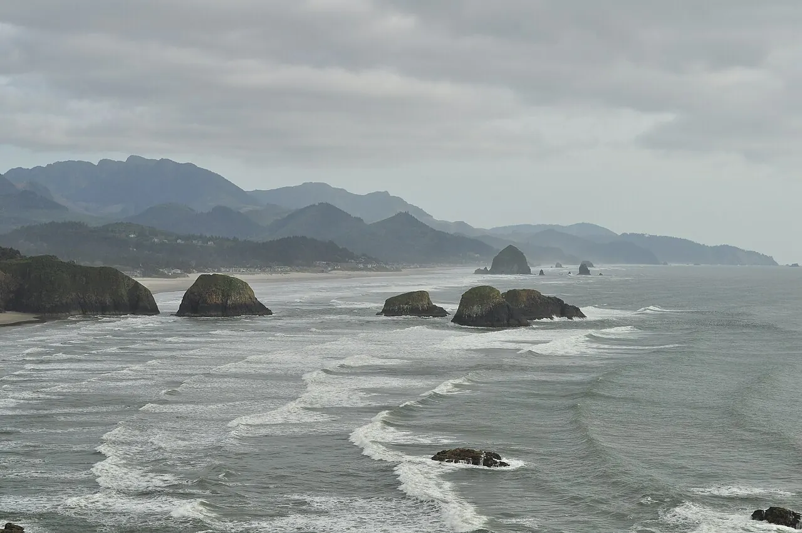
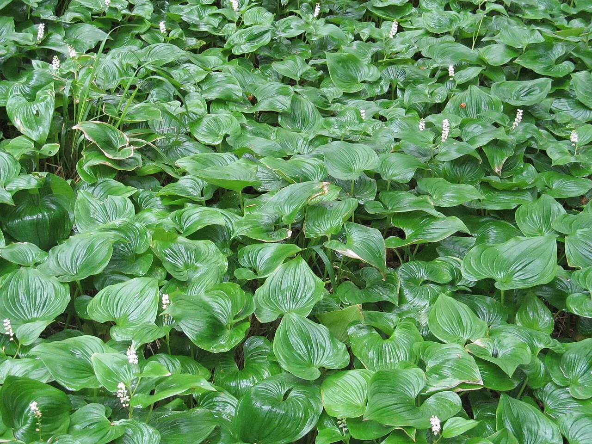
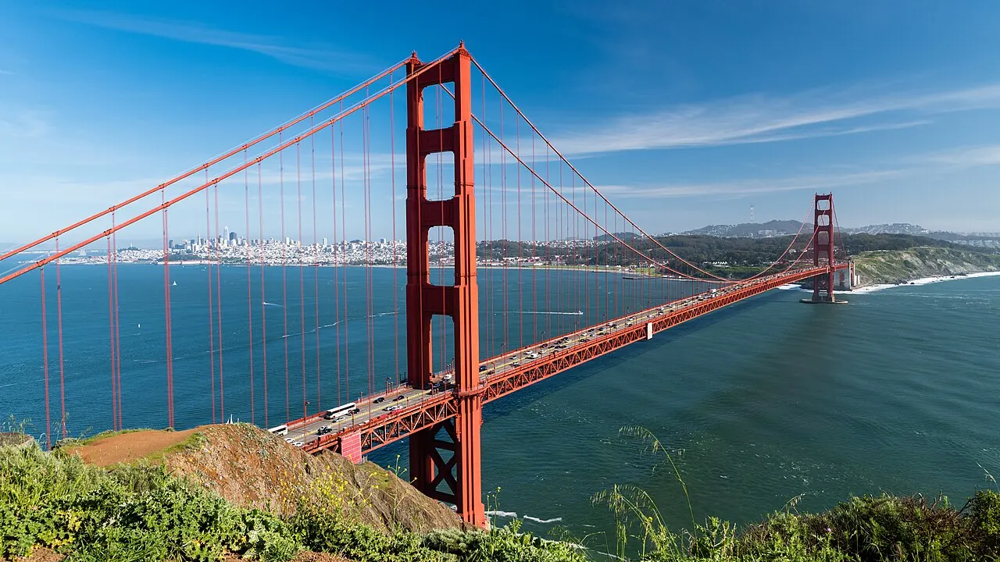

The plan at a glance
This is Anudeep’s personal, detailed version of the trip. It complements the shared itinerary; where bookings, flight times, or live road conditions differ, the confirmed group booking and same-day official alert should win. Both flights are booked: out on Aug 8 (DL2534 SAT 7:30 AM → LAX, DL1045 LAX 12:07 PM → SEA 2:50 PM) and home on Aug 15 (DL2568 LAX 10:59 AM → SAT 3:59 PM).
Booking tracker
Everything that must be reserved, modified, or verified — in the order it bites.
| Status | Booking | Used on | Notes |
|---|---|---|---|
| URGENT — today | Ashford / Elbe room or campsite | Night of Sat Aug 8 | Rainier gateway on an August Saturday — book immediately. Campsite fallback: Cougar Rock inside the park. |
| URGENT — today | Hertz reservation modification | Aug 8–15 | Picked up SEA ~3:45 PM Aug 8. UPDATED: drop LAX Friday Aug 14 by 9 PM (7 days — verify adjusted total). All 3 drivers on the contract (under-25 surcharge applies). |
| Verify now | Mount Rainier timed-entry reservation | Sun Aug 9, pre-7 AM | Early entry has historically been exempt — confirm the 2026 rules on nps.gov and grab a reservation if required. |
| Reserve | Fern Canyon day-use reservation | Tue Aug 11 | Free permit (May 15–Sep 15 rule) via Redwood Parks Conservancy, plus $12 cash at the kiosk. |
| Booked | Elkhorn Slough otter kayak | Wed Aug 12, 3–5 PM | Moss Landing launch. Reconfirm the window and arrive early for parking (~$10). |
| Reserve | Malibu surf lesson — Surfrider | Fri Aug 14, 10 AM–12 PM | ~$90/person, wetsuit and board included. Book for Aug 14. |
| Reserve | Rooms for nights 3–7 | Aug 10–14 | Night 2 done — ended up at the Quality Inn, Kelso WA. Still needed: Bandon/Coos Bay (TONIGHT Aug 10) · Garberville (Aug 11) · Salinas — NOT Monterey (Aug 12) · Pismo Beach (Aug 13) · El Segundo/Inglewood near LAX (Aug 14). |
| Booked | Flights, both directions | Aug 8 + Aug 15 | Out: DL2534 SAT 7:30 AM → LAX 8:33, DL1045 LAX 12:07 PM → SEA 2:50 PM. Return: DL2568 LAX 10:59 AM → SAT 3:59 PM. |
The 2026 watchlist
These claims shape the schedule but must be verified against the linked official sources before departure.
Rainier timed entry
Pre-7 AM entry at the Nisqually gate has historically been exempt from timed-entry windows. Verify the 2026 rules on nps.gov. $30/vehicle (or an America the Beautiful pass). Grove of the Patriarchs remains closed from 2021 flood damage — do not detour for it.
Big Sur traffic control
Highway 1 is open, but Rocky Creek Bridge has 24/7 one-way signal control through Aug 31 with delays up to ~15 minutes. Check Caltrans QuickMap on the morning of Day 6.
Monterey Car Week
The trip overlaps Aug 7–16, 2026. That is why the plan sleeps in Salinas and clears the Monterey/Carmel area early on Day 6. Verify the event calendar.
Fern Canyon reservation
A free day-use reservation is required for Aug 11 (May 15–Sep 15 season) plus $12 cash. Confirm current release rules with the Redwood Parks Conservancy. Davison Road is narrow dirt with stream crossings.
McWay Falls access
The overlook trail is expected to remain closed through 2026. Use only the legal viewing area shown by California State Parks.
Ecola State Park
Reopened April 2026 after landslide repairs — check current advisories before relying on the Day 3 opener.
The full route
Use the shared interactive map for the geographic overview; each day below has a focused directions link.
If the embedded map does not load, open the full route map or use the per-day Google Maps links below.
The eight-day plan
Open a day for the full timeline, stops, cash and fuel calls, and cut-if-late rules.
1Land SEA → Seattle → the Rainier gate
Sat Aug 8 · land 2:50 PM · car ~3:45 · Ashford ~10:15 PM · ~100 miles

DL1045 lands at 2:50 PM — go straight to the Hertz counter; there’s no car-less downtown window anymore. Wheels by ~3:45, downtown by ~4:15. That leaves roughly three golden-hour hours in Seattle before the two-hour run to Ashford. Kerry Park at sunset is the anchor; everything else flexes around it.
- 2:50
Land at SEA, pick up the Hertz car
Bags, then the rental counter. Confirm the modified contract (drop LAX ~7:30 AM Aug 15), the under-25 surcharge, the toll policy, and all three approved drivers.
- ~4:30
Pike Place Market — park once
Use the Pike Place garage and walk everything downtown from here. Produce stalls wind down after 5, but the market, Pike Place Chowder, Piroshky Piroshky, and the gum wall are still going.
- ~5:30
Waterfront + Seattle Great Wheel
Straight downhill from the market on the rebuilt waterfront promenade. The 175-ft wheel over Elliott Bay runs ~12 minutes in enclosed gondolas (~$20) with big Sound-and-skyline views.
- Optional
Space Needle or Chihuly Garden & Glass · ~$40
5 minutes from the market — only if you’re ahead of schedule. Chihuly next door is the better value. Kerry Park at sunset matters more than either.
- ~7:30
Kerry Park — the Seattle postcard
Skyline, Elliott Bay, and — on a clear evening — Mount Rainier floating behind the city. You’ll be standing on its summit road tomorrow. Free, 5 minutes from downtown. Sunset ~8:25 PM; leave by 8 to make Ashford at a sane hour.
- Night 1
Sleep in Ashford — the Rainier gate
~2 hours from downtown, arriving ~10:15 PM. Ashford/Elbe motels and cabins sit 6 miles from the Nisqually entrance — book now, it’s an August Saturday. Campsite alternative: Cougar Rock inside the park. Grocery-stop tonight: breakfast food, trail lunch, and hike snacks — nothing opens before 7 AM tomorrow.
2Mount Rainier → the Oregon Coast
Sun Aug 9 · gate 6 AM · leave park ~5:30 PM · ACTUAL: stopped in Kelso, WA · ~130 miles
In before 7 AM: historically exempt from timed-entry windows (verify 2026 rules on nps.gov), no line, first light on the mountain, and a parking spot at Paradise before the lot fills. Cell service in the park is near zero — offline maps must already be downloaded. The evening constraint is just as hard: leave the park by ~5:30 PM; 7 PM is the absolute ceiling, and that’s already a midnight-ish coast arrival.
- 6:00
- ~6:30
Christine Falls
69-ft falls framed by a stone bridge, steps from the pullout. Classic quick shot on the climb to Paradise — 10 minutes.
- 6:45
Narada Falls
168-ft curtain waterfall; the short, steep path to the base viewpoint catches rainbows in the mist. 15 minutes.
- 7:15–1
Paradise — the Skyline Trail
The best day-hike in Washington: a 5.5-mile loop climbing ~1,450 ft to Panorama Point, staring straight at the glaciers. August means peak wildflowers and marmots everywhere.
- Carry: layers and plenty of water — Paradise is 5,400 ft and weather flips fast.
- Snowfields linger into August: stay on trail.
- Short option: Skyline to Myrtle Falls — 1 mile, nearly flat, still a postcard.
- 1:30
Reflection Lakes
The mirror shot of Rainier, right off Stevens Canyon Rd, 10 minutes past Paradise. Calmest water midday-ish; then backtrack out the Nisqually gate.
- 5:30
Leave the park → dinner in Astoria
~3.5–4 hours, 175 miles to the coast via Astoria. If you’re on time, dinner at Fort George ~8:30 PM — restaurant side only; everyone is under 21. The last stretch is dark, just cruising.
- Night 2
ACTUAL: Quality Inn, Kelso WA
The night actually ended at the Quality Inn in Kelso (I-5 exit 39) instead of Seaside/Cannon Beach — no Astoria dinner, no midnight coast driving. Right call. The coast is ~2 hr away via the Lewis & Clark Bridge and US-30 through Astoria; Day 3 is replanned to start from here.
3The Oregon Coast
Mon Aug 10 · Kelso → Brookings · 9 AM–9:45 PM · ~380 miles · Oregon speed-run, goal: California

The 9 AM Kelso departure plus the restated goal — more California, less Oregon — turns today into a speed-run: one icon stop each, then push past Bandon to Brookings, waking up 10 minutes from Samuel Boardman. The last ~90 minutes is after dark: a deliberate, accepted exception to the no-night-driving rule — drive it slow, watch for deer and elk, swap drivers in Coos Bay. Cut today: Astoria Column, Ecola, Hug Point, Cape Kiwanda/Doryland (lunch moved to the Tillamook Creamery), Sea Lion Caves, sandboarding (Florence passes too close to closing), Bandon. One call from the road NOW: book the Brookings room.
- 9:00
Depart Kelso — roll through Astoria without stopping
Full tank, then US-30 along the Columbia; you pass through Astoria ~10:45. The Column and Riverwalk are cut — California is the goal now. (Ecola SP also stays cut — it’s the same Haystack Rock you’re about to see free from the sand.)
- 11:15
Cannon Beach — Haystack Rock · the ONE North Coast stop
235-ft monolith, puffins, tide pools at low tide — 45 minutes on the sand, then move. ⚠ Sneaker waves — stay up the beach and off the logs.
- Drive-by
Neahkahnie Mountain Viewpoint
5-minute photo pullout only today — it’s right on 101 in Oswald West SP, near-180° view. Easy to miss the turnout; watch for it. Don’t linger.
- 1:00
🧀 Tillamook Creamery — lunch + factory · out by 1:50
Right on 101: free self-guided tour over the production floor, squeaky cheese curds, and the food hall for lunch — grilled cheese, cheese pizza, or mac for the vegetarians; ice cream for everyone; the chicken/fish eaters check for chicken strips (no beef burgers for them). Replaces the Cape Kiwanda detour and keeps Brookings at ~9:30.
- 4:15
Cape Perpetua — Thor’s Well · ~$5 · 30 min
Highest driveable viewpoint on the Oregon coast. Thor’s Well and Devil’s Churn are best about an hour before high tide — check the chart. The Captain Cook Trail down to the tide pools is the safe, great walk; stay off wave-washed basalt.
- 5:00
Heceta Head Lighthouse — photo pullout
The most-photographed lighthouse in Oregon, on a cliff over a cove. 10-minute roadside photo today — skip the trail. (Sandboarding in Florence is cut — you pass Sand Master Park ~5:45, too close to closing.)
- 6:40
Coos Bay — quick dinner + full tank · out by 7:15
Fast food or grocery deli, fuel the car, swap drivers. The next 110 miles are the deliberate night stretch.
- Night 3
Sleep in Brookings — arrive ~9:30 PM
The last ~90 minutes is after dark — the accepted exception: slow and steady on 101, high beams when empty, watch for deer and elk. Waking up here puts Samuel Boardman 10 minutes out the door at 8 AM. Book NOW from the road.
4Samuel Boardman + the Redwoods
Tue Aug 11 · Brookings → Garberville · 8 AM–5:45 PM · ~200 miles · the payoff day

Fern Canyon is magical but costs 1.5–2 hours of narrow dirt-road access (Davison Road, stream crossings, elk on the road). Attempt it only with the confirmed Aug 11 reservation, $12 cash in hand, and schedule margin by mid-afternoon. The Redwoods are also a cell dead zone — offline maps on.
- 8:00
Wake in Brookings — Boardman out the front door
Last night’s push is the whole payoff: no transit drive this morning. Breakfast fast, then 10 minutes north into the corridor.
- 8:15
Samuel H. Boardman Scenic Corridor · 2 full hours
The best cliff pullouts in Oregon in prime morning light. Prioritize Natural Bridges, Thunder Rock Cove/Secret Beach, and Arch Rock; with two hours, Whaleshead fits too. Khun Thai won’t be open this early — grab quick lunch in Crescent City ~11 instead.
- 11:45
- 12:30
Prairie Creek Redwoods — Fern Canyon · 12:30–2:30
The world’s tallest trees, and Fern Canyon’s 50-ft fern walls are the showstopper. Reservation is for today (Aug 11) — $12 cash at the kiosk. Rough access road; watch for Roosevelt elk. On the way in or out, cruise the Newton B. Drury Scenic Parkway and Big Tree Wayside.
- 4:30
Avenue of the Giants — Founders Grove
The 31-mile old-growth scenic alternate to 101. Walk among the giants on Founders Grove’s easy half-mile loop and see the fallen Dyerville Giant.
- Optional
Shrine Drive-Thru Tree · $15/car
Roadside classic on the Avenue: drive the car through a living redwood. Cheesy, quick, great photo — daytime only.
- Night 4
Sleep in Garberville — arrive ~5:45 PM
Earliest arrival of the trip: real dinner, actual rest — the “spacing it out” evening. Fuel up tonight; tomorrow is the longest drive of the trip.
5Redwoods → Golden Gate → Otter Kayak
Wed Aug 12 · Garberville → Salinas · 7:30 AM–6 PM · ~300 miles

US-101 is the only reasonable route with the 3 PM kayak launch. Highway 1 through Mendocino is beautiful but belongs on a different trip. Leave Garberville by 7:30 AM sharp; Willits, Ukiah, and Healdsburg are quick breaks, but a sit-down lunch threatens the launch window.
- 7:30
Leave Garberville with a full tank
Grab breakfast to go. Efficient 101 miles all morning — the day’s two payoffs are both south of the fog line.
- ~12:30
- 3–5
Elkhorn Slough kayak — sea otters · BOOKED · ~$50
MAIN EVENT: Moss Landing has the densest sea otter population in California. Flat, calm, protected water — no surf, no cold-shock risk — with otters, harbor seals, and pelicans within feet of the kayak. Arrive by ~2:30 for parking (~$10) and check-in; bring layers, quick-dry clothes, and a waterproof phone case.
- Night 5
Sleep in Salinas — NOT Monterey
Arrive ~6 PM. Twenty minutes inland and cheap — Monterey/Carmel are sold out (or $500+) for Car Week. Rest up and fuel up; Big Sur is tomorrow.
6The Big Sur Signature Drive
Thu Aug 13 · Salinas → Pismo Beach · 8:30 AM–7 PM · ~250 miles

Check QuickMap at breakfast: Rocky Creek Bridge runs 24/7 one-way signal control through Aug 31 (≤15-minute delays), and any confirmed closure outranks this plan. Big Sur is also a cell dead zone — offline maps on before leaving Salinas.
- 8:30
Point Lobos · ~$10/vehicle
Cypress Grove and Bird Island loops at the north gateway to Big Sur. The small lot fills fast — arrive early. China Cove is stunning. No swimming.
- 10:15
Garrapata State Park — Soberanes Point
Unmarked turnouts (numbered gates 13–19) and empty bluff trails: the Big Sur hardly anyone stops for.
- 11:00
Bixby Creek Bridge
The most-photographed bridge on the coast. Use the marked turnouts; expect the Rocky Creek one-way delay just north (≤15 min).
- 12:00
Pfeiffer Beach · $12 CASH only
Purple-tinged sand and the Keyhole Arch. Narrow Sycamore Canyon Road near Big Sur Station; small lot, wind, rip currents — photos, not swimming.
- 1:30
- 2:45
McWay Falls
80-ft waterfall onto a cove beach. The overlook trail is closed through 2026 — view from the legal roadside area only.
- Optional
Sand Dollar Beach, Jade Cove + Ragged Point
Big Sur’s longest beach, the cove where washed-up jade hides in the rocks at low tide, and the last big cliff pullout with café, restrooms, and emergency-priced gas. All free; ~30 + 20 minutes.
- 3:45
Piedras Blancas elephant seals · free
Hundreds of elephant seals on the beach from a free boardwalk — better value than a Hearst Castle tour, which this plan deliberately skips.
- 5:30
Morro Bay — Morro Rock + dinner
A giant volcanic plug rising from the bay; fish and chips on the Embarcadero. (This is also the backup otter-kayak spot if Elkhorn fell through.)
- Night 6
Sleep in Pismo Beach
Arrive ~7 PM. Beach town, cheap motels, and it shortens tomorrow morning’s run to Malibu. Walk the pier at sunset (~7:55 PM).
7Surf Malibu → Swim Santa Monica → Griffith Sunset
Fri Aug 14 · Pismo → LAX · 7 AM · car back 9 PM · ~215 miles

The 10 AM surf lesson (leave Pismo by ~7) and the 9 PM Hertz return at LAX. Gas up before driving to Griffith so the post-sunset run is a straight shot: leave the observatory by 7:50, Hertz by ~8:50, hotel shuttle after. Everything between the lesson and Griffith still lingers like a beach day should.
- 10–12
Surf lesson — Malibu Surfrider · ~$90
Wetsuit included — the water is ~69°F here, the warmest of the trip. Surfrider is a long, gentle, forgiving longboard break: the classic first-timer wave. Book for Aug 14; the school may shift to Zuma/Sunset Point for conditions.
- 12:30
El Matador State Beach
Sea-stack photos and steep stairs to the sand — just west of Surfrider, so grab it on the way in if easier.
- 1:30
- 2:30
Santa Monica — swim + beach + pier
THE swim stop: ~69°F water, lifeguarded, gentle. Pier, Pacific Park, the Route 66 sign — and actually get in the water. No flight to catch today, so stay as long as it’s fun.
- 4:30
Venice Beach Boardwalk
Skate park, Muscle Beach, street performers, and the canals two blocks in — a short hop south while you’re already sandy.
- 6:30
Griffith Observatory — Hollywood Sign at sunset · leave by 7:50
Free observatory, the Hollywood Sign view, the city lighting up at sunset (~7:45 PM). HARD STOP at 7:50 — the car is due at Hertz LAX by 9. Dinner near the hotel after the drop.
- Night 7
Return the car (~8:50), then hotel shuttle — El Segundo / Inglewood
Hertz LAX by 9 PM, tank already full, photograph the car and fuel gauge, then the hotel shuttle. The hotel must have an airport shuttle — you’re car-less from here. Pack tonight.
8Fly home
Sat Aug 15 · no car — hotel shuttle · DL2568 LAX 10:59 AM → SAT 3:59 PM
DL2568 departs at 10:59 AM. The car went back last night, so the morning is just the hotel shuttle (~8:30), bag drop, and Saturday-morning LAX security — airside by ~9 with two hours of margin. Bags packed from last night; this morning is pure execution.
- 7:30
Wake, breakfast, checkout
The car sweep happened at last night’s return. Receipts and the Fern Canyon permit make good souvenirs.
- ~8:30
Hotel shuttle to LAX
No car to return — it went back Friday at 9 PM. Confirm the shuttle time with the front desk tonight.
- ~9:00
Airside at LAX
Bags dropped, through security, snacks at the gate with two hours of margin.
- 10:59
DL2568 → San Antonio, lands 3:59 PM
Trip done — 8 days, ~1,550 miles, one mountain, one whole coast.
Reservations, cash, and trip triggers
The details most likely to change what fits.
Reserve and confirm
- URGENT: Ashford/Elbe room or campsite for Sat Aug 8
- URGENT: Hertz modification — pickup ~3:45 PM Aug 8, drop LAX ~7:30 AM Aug 15
- Rainier timed-entry rules for pre-7 AM Aug 9 (nps.gov)
- Fern Canyon reservation for Aug 11
- Reconfirm the Elkhorn Slough kayak — Aug 12, 3–5 PM
- Malibu surf lesson — Aug 14, 10 AM
- Rooms for all six remaining nights (see the booking tracker)
Carry and check
- ~$75 cash: Fern Canyon $12 + Pfeiffer $12 + kiosks, parking, and drive-thru tree
- Offline maps downloaded for Rainier, the Redwoods, and Big Sur before Day 2
- Caltrans QuickMap on the morning of Day 6
- Tide forecast for Hug Point, Thor’s Well, Secret Beach, and tide pools
- Layers + water for Paradise (5,400 ft); quick-dry clothes and a waterproof phone case for the kayak
- Rental toll policy and the full-tank return requirement
Cut first when late
- Day 1: Space Needle/Chihuly, then the Great Wheel — never Kerry Park.
- Day 2: Reflection Lakes and the Narada base path; weather = Myrtle Falls swap.
- Day 3: Sea Lion Caves and Sand Master Park.
- Day 4: Fern Canyon — the largest time sink, even reserved.
- Day 5: shorten Battery Spencer; the kayak is untouchable.
- Day 6: Sand Dollar/Jade Cove, the long lunch, and Morro Bay.
- Day 7: Venice, then Point Dume and El Matador.
Conditions that override the plan
- Official closure, fire, surf, tide, or weather warnings.
- 2026 Rainier timed-entry rules differing from the pre-7 AM assumption.
- A tour operator moving or canceling the kayak or surf session.
- Monterey Car Week traffic around Carmel and Big Sur.
- Fog obscuring a viewpoint — do not wait indefinitely.
- The 10:59 AM Aug 15 departure and its 7:30 AM rental return.
Recheck before travel: road work, trail access, permits, prices, hours, tides, wildlife patterns, and restaurant schedules can change. This page is Anudeep’s organized master plan; it is not a live conditions service.
Photo credits
Locally optimized copies of freely licensed Wikimedia Commons images.
- Pike Place Market, Visitor7, CC BY-SA 3.0; resized and converted to WebP. (Day 1)
- Haystack Rock and Cannon Beach from Ecola State Park, Joe Mabel, CC BY-SA 4.0. (Day 3)
- Samuel H. Boardman State Scenic Corridor, Dougtone, CC BY-SA 2.0; resized and converted to WebP. (Day 4)
- Golden Gate Bridge from Battery Spencer, Christoph Strässler, CC BY-SA 2.0. (Day 5)
- Bixby Creek Bridge, Ian McWilliams, CC BY 2.0. (Day 6 + hero)
- Santa Monica from the pier, Northwalker, CC0. (Day 7)
{kind=link}
{kind=link}
{kind=link}
{kind=link}
{kind=link}
{kind=link}